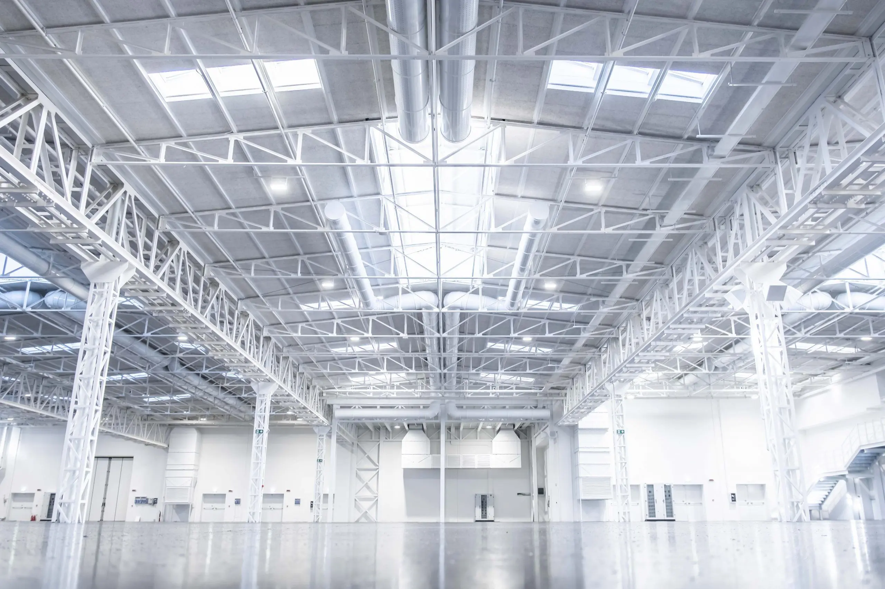

Chi Siamo
Studio Capoferri è uno studio tecnico con esperienza decennale nella progettazione strutturale in acciaio. Collaboriamo con aziende, architetti e ingegneri per sviluppare soluzioni personalizzate, sicure e conformi alle normative.
Servizi
- Progettazione strutture in acciaio
- Calcolo strutturale e analisi FEM
- Progettazione secondo NTC e Eurocodici
- Direzione lavori e consulenze tecniche
Progetti
Abbiamo realizzato strutture per capannoni industriali, edifici residenziali, sopraelevazioni e carpenterie speciali. Alcuni esempi dei nostri lavori:

Progetto 1

Progetto 2

Progetto 3
Contatti
Email: info@studiocapoferri.it
Telefono: +39 030 7357263
Indirizzo: Via Piave 35 – Adro (BS)